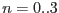
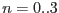

There is a need to calculate the fractional exposure FRACEXP column entries in the CCD specific exposure extensions (see [2] and SSC_LUX_TN_0038) per frame which will be addressed by higher level SAS tasks for the computation of exposure times or exposure maps. In addition one needs to create GTIs for timing analysis, e.g. light-curves or for determination of absolute quantities like fluxes.
The plan is to use the counter and discarded line info stored within the EPIC pn Auxiliary (AUX) File ([1], p.50) to check if and how many events have been lost during the on-board processing and telemetry or have been flagged as bad in epframes.
A problem arises when comparing these counters with the number of events in
the actual CCD specific events list: counters are given every  CYCLEs and
they come per quadrant, i.e. not per CCD. Here
CYCLEs and
they come per quadrant, i.e. not per CCD. Here  gives the number of
cycles which have been integrated prior to the creation of the counter
information. It is a programmable parameter defaulted to 20 to reduce the
housekeeping telemetry and needs to be extracted from the periodic housekeeping
data (PMH) (parameter name is An_MAXFRC, for quadrant , see
Table 1).For a description of all HK-parameters see [3].
gives the number of
cycles which have been integrated prior to the creation of the counter
information. It is a programmable parameter defaulted to 20 to reduce the
housekeeping telemetry and needs to be extracted from the periodic housekeeping
data (PMH) (parameter name is An_MAXFRC, for quadrant , see
Table 1).For a description of all HK-parameters see [3].